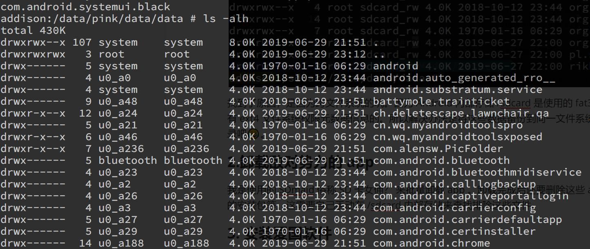

1.背景
近期，不少网友曝光黑皮搜查手机的新闻，虽然不知真假，但还是为此菊花一紧。感谢党，感谢政府，感谢国家对我们关爱有加，我们感到无比地幸福😂。可是呢，像咱这种老大哥不待见的屁民，面对黑皮搜查手机取证的时候，如何如何将自己的风险讲到最小呢？
1.坚决反抗
这条路肯定行不通啦，屁民反抗的黑皮的话，先给你安个寻衅滋事罪把你给扣起来，拘留十五日，写个保证书。咱可不想受到社会主义铁拳的打击。
2.销毁手机，抹除数据
这样做极大地保护我们的隐私，具有技术可行性。但这样做也会招来黑皮的关注，可能会给你安个毁灭证据罪什么的，可不好说。
3.伪造假数据
已经有大佬开发了 xposed 模块 FuckMFS ，可以优雅地 fuck 掉 MFsocket 。特点很多，联系人与SIM卡号随机生成、短信返回通知类、图片音频视频信息随机生成、应用列表返回国内白名单应用等。如果符合你的需求，可以去试一下哈。
4.伪装成小粉红😂
毕恭毕敬地向警察蜀黍交出手机啦，做个乖宝宝，做个普通的小粉红，将自己的风险降到最小。假如手机里装着学习强国、人民日报、两学一做等爱国软件，相册里保存社会主义核心价值观标语等等，那警察蜀黍对你的好感度肯定会大幅提高啊。警察叔叔肯定会认为：不错不错，这才是我党的一等公民，这才是我党最需要的韭菜？😂。
2.oh-my-pink 一键粉红
2.1它是什么东东？
根据前面的分析，做一个忠党爱国的小粉红，毕恭毕敬地交出手机，放心大胆地让警察蜀黍检查手机，这样的风险最小。但我们不是小粉红，如何在那种紧急的场景快速地将手机伪装成一个小粉红的手机呢？于是就出了 oh-my-pink 教程，将我们的手机进行社会主义改造，变成粉红版的手机，爱国手机，战狼手机😂。
2.2它的功能及特点
1.一键粉红手机，将手机转变成战狼手机，爱国手机，粉红版手机😂
2.速度极快，适用于时间极其紧迫的情况下。经测试，整个过程不到1分钟。
3.使用 iptables 禁用所有联网操作，防止下载数据
4.禁用开发者模式，删除手机上的 adbd 服务，使得 MFsocket 安装失败
5.自动卸载外置存储卡，将敏感数据隔离开来
2.3 它的缺点
本教程不具有通用性，因为手机型号不同，配置不同，安装的 app 也不同，所以无法做到为每个人都进行适配。仅仅提供教程，以及技术可行性的实现方式。至于实现代码和脚本，请根据自己的需求进行修改。手机需要 root ，我相信就这一点就劝退了大部分人😂。但想要实现极速一键粉红操作就得需要使用 root 权限，简单粗暴直接通过 rsync 同步文件来实现。这需要一定得门槛，不如把搞机当作一项和反迷信上网的科学技能 ？ 大雾：）😂。趁现在还年轻，还有时间和精力来 hacking ，不然到老了就没精力去搞了。
3.可行性分析
3.1. Android 分区
关于 Android 分区 | 下面剽窃一段官方文档
Android 设备包含若干个分区，这些分区在启动过程中发挥不同的作用。
system：
system分区主要包含 Android 框架。recovery：
recovery分区用于存储在 OTA 过程中启动的恢复映像。如果设备支持 A/B 更新，则恢复映像可以是启动映像中包含的 RAM 磁盘，而不是单独的映像。cache：
cache分区用于存储临时数据，如果设备使用 A/B 更新，则可以不要此分区。cache 分区不需要可从引导加载程序写入，而只需要可清空。大小取决于设备类型和 userdata 分区的可用空间。目前，50MB 至 100MB 应该没问题。data：data` 分区包含用户安装的应用和数据，包括自定义数据。
vendor：
vendor分区包含所有不可分发给 Android 开源项目 (AOSP) 的二进制文件。如果没有专有信息，则可以省略此分区。
以下是我的 moto z play 的分区表
1 | addison:/ $ su |
如果我们要对手机进行社会主义改造，那么 /data 分区时我们关注的重点。其中 /data/app 目录是我们手机下载 Android 的 app ，每个 app 在 /data/data 目录里都对应着自己的应用数据目录，也就是说 /data/app 和 /data/data 是单射关系。其中 /data/data 目录里也包含着系统 app 的应用数据目录。换句话来说对手机进行设社会主义改造，也就是对 /data分区进行社会主义改造。在 /data/data 和 /data/app 目录里的敌人当然要清理干净来，比如反迷信上网软件，电报，Google ，Twitter 等等，这些敌人一定要清理干净啦。接下来安装上 学习强国，两学一做，人民日报等爱国app。
面对查手机的时候，我们总不能挨个挨个卸载吧，这样肯定是来不及的。所以我们使用一个快速高效的工具帮我们同时完成卸载和安装操作。于是我们使用 rsync 这个工具，直接将社会主义改造过的粉红版的 /data/data 和 /data/app 目录覆盖掉 当前的 /data/data 和 /data/app 目录。在此简单地介绍一些 rsync 这个暴力的工具。
3.2. rsync
用法
1 | rsync [OPTION]... SRC DEST |
可能会用到的选项
1 | -v, --verbose 详细模式输出。 |
4.实现过程
测试用的手机信息：

4.1.备份数据
刷机千万条，数据第一条，备份不规范，机主两行泪😂
手机开启 adb 网络调试模式 设置->系统->开发者工具。这样方便在PC的终端上进行调试。

PC端
安装好platform-tools工具，打开终端
1 | # adb 连接到手机 |
备份数据的工具很多啦，我最常用的就是钛备份。但今天要对 /data/data 和 /data/app整个目录进行备份，还是用 tar 进行暴力备份吧。其实用 TWRP 备份最好啦。
1 | # 查看系统分区情况 |
发现一个很僵硬的问题，使用 tar 或者 rsync 备份是无法保留所属信息的，虽然可以保留权限信息，但目录和文件的所属信息时无法保存的。那我们只好将 /data/data 目录里的内容删除了，删除 /data/data目录里第三放 app 的应用数据目录时不影响使用的。
原 /data 目录

rsync 复制后的目录，却发现所有的所属信息都没了😂

找到了原因，是因为跨文件系统的坑。因为 Android 内部存储 /sdcard 是使用的 fat32 文件系统，fat32 文件是没有 ext4 文件系统权限元数据信息的。所以解决办法是将这些数据备份到同一文件系统下。就设置为 /data/pink 目录吧😂。

4.2.卸载敌对势力的 app
我是使用的 SDmaid 俗称 SD 卡女佣？ 来批量卸载 app 。卸载完成后还要删除这些 app 残留的文件，以及 app 的安装包等。这需要自己手动在 /sdcard 内部存储来查找排除这些文件。总之一定要让我们的手机正能量满满。
4.3. 安装爱国软件
第一肯定是老大哥的红宝书学习强国啦，其他的像人民日报、两学一做、智慧团建等等，也都下载下来安装上。
4.4.备份粉红版 /data 目录
以上步骤完成后，我们就动手制作一个 粉红版的 /data 目录，主要备份 /data/data 和 /data/app 目录，即卸载掉帝国软件，装有爱国软件的目录
1 | # 备份 /data/data目录 |
4.5拉清单？
别看你今天闹得欢，小心我日后拉清单😂
我们这个清单就老大哥不待见的东西，比如膜蛤、乳包等等你懂😜。无论时图片还是音频，我们统统把他们放在外置 SD 卡里，到时候在一件粉红的时候自动把 外置 SD 卡卸载掉，从而让取证软件识别不到外置 SD 卡。当然内部存储里的一些文件也需要删除，比如 telegram 的 /sdcard/Android/data/**telegram/ 目录，这里面有很多东西，都很危险。到时候我们使用 rsync 直接删除 /sdcard/Android 和 /mnt/media_rw/A10F-22E/Android 。因为每个 app 都可能会自己创建一些目录和文件，所以这一步主要是用来排查这些文件，把他们拉到清单里。如果文件和目录比较少的话，可以直接将这些目录修改到想要的变量。
4. 关键脚本代码
1 | time rsync -avlHt --delete --progress /data/data /data/pink/data |
5.设定 tasker 任务
tasker介绍和使用 | Tasker：Android 上的自动化标杆 | 下面剽窃一段介绍
我们今天要介绍的自动化工具 Tasker 比 Workflow 更强大，自由。得益于 Android 系统的开放性与对系统 API 调用的宽松要求，Tasker 可以实现更多样，更复杂的自动化操作。特别是在获得 ROOT 权限之后 Tasker 能访问几乎所有数据（手机内外的皆可），甚至实现手机硬件支持的任何操作（即使系统没有）。
5.1添加任务
打开 tasker 后点击那个大大的 + 号按钮，添加我们自定义的这些任务。输入任务名称为 pink。

再次点击那个大大的 + 号，来添加单个任务。选择操作类别为代码

选择代码操作为运行外壳

添加 shell 运行命令，所有的操作都要使用 root 运行

添加完成后，点击左下角那个开始按钮，如果任务左边为绿点，则运行成功。如果为红点，则会出现报错信息。

5.2 使用 shell 开启飞行模式，防止 MFsocket 进行联网
1 | # 禁用数据连接 |
5.3 禁用开发者模式，禁用 adb 连接
1 | addison:/ # busybox ps -T | grep adb |
5.4 开启防火墙，禁用所有联网（重启后会失效）
1 | iptables -t nat -A OUTPUT -p tcp -j DROP |
防止 MFsocket 关闭飞行模式，来进行联网操作。经网友反应，MFsocket 会进行联网操作来下载一些数据。
5.5卸载掉外置存储卡
如果你装有外置的 SD 卡的话，可以通过 umount 命令卸载，这样可以防止读取到外置 SD 内存卡。另外平时我们可以将一些敏感的文件放到 外置 SD 内存卡里，这样在非常时期可以通过卸载 SD 卡来达到伪装的目的。另外，卸载后的外置 SD 内存卡是需要自己主动 mount或者重启手机才能重新挂载到设备，一般取证软件应该没有自己去主动挂载 SD 卡，仅仅是推测。
1 | # 选项 a 是 umount 所有设备 ，f 是强制 unmount |
5.6修改壁纸为战狼？😂
通过 shell 命令将壁纸修改为一张爱国壁纸、战狼壁纸、粉红壁纸？
1 | am start -d file:////data/local/tmp/black_white.png -a \ android.service.wallpaper.CROP_AND_SET_WALLPAPER -f 0x1 \ ch.deletescape.lawnchair.qa/ch.deletescape.wallpaperpicker.WallpaperCropActivity |
需要注意的是这条命令的最后一个参数是根据自己使用的 Lancher 不同而不同的。要获取这个参数的话需要使用一些工具，我这里使用的是 My Android tools。还是需要 root 权限来使用这个工具。

点击 about 左侧那个按钮

接着点击 Activity

找到你使用的 Lancher，拉到最下面你会找到一个 WallpaperCropActivity。

然后在点击 <···> 这个按钮，会出现详细的路径。在点击右上角第二个复制按钮，这个参数就复制到了剪切板。
file后面的是壁纸的路径，修改为自己设定路径就可以。
5.7不如保存一些战狼图片、那兔图片？
下载一些战狼图片、那年那兔那些事儿的图片到内置存储。下载抗美援朝电影？？下载老大哥红宝书？？下载价值观标语？？总之，你觉着那些老大哥喜欢，你就去下载那些。这些并不是必须的，只是将我们的手机装修的更粉红😂。